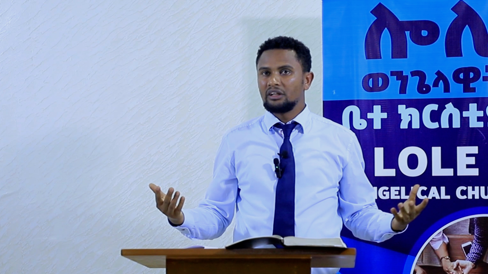

About Lole Evangelical Church
Our Story
Lole Evangelical Church, located in the city of Hawassa, Ethiopia, is a dedicated, disciple-making community committed to the foundational truths of the Christian faith.
We were founded in September 2019, initially comprising a dedicated group of just seven individuals. Our mission, from day one, has been to proclaim the Gospel of Jesus Christ and see lives transformed through a genuine encounter with God's Word. Since our inception, we have made significant strides in positively impacting the lives of our members and the wider community in Hawassa.
Church Documentary

The Story of Lole Evangelical Church
Our Vision
Our overarching vision is simple: to cultivate and empower fully devoted disciples of Jesus Christ who, in turn, passionately disciple others.
We are committed to a continuous cycle of spiritual growth—being transformed by the Gospel so we can be agents of transformation in Hawassa and beyond.
Our Core Values: What We Live By
These five core values are the heart and foundation of everything we do:
- Sola Scriptura (The Authority of Scripture): We hold deep respect for the authority of the Bible as the inspired, infallible, and all-sufficient Word of God. It is our final guide for faith and practice.
- Holiness: We are committed to holiness in every sphere of life, striving to reflect Christ's character through the power of the Holy Spirit.
- Love and Inclusivity: We embrace radical love and warm inclusivity, welcoming all people into our community with the grace and truth of the Gospel.
- Exemplary Living: We are dedicated to exemplary living, believing that our actions and character should consistently bear witness to the hope we have in Christ.
- Discipleship: We are dedicated to multiplying disciples, equipping every member to know Christ intimately and to train others to do the same.
Worship and Gathering
We believe that consistent gathering is vital for spiritual health. We observe a regular, weekly schedule designed to encourage deep spiritual growth, enrich fellowship, and dedicate us to community service in Hawassa.
| Day | Focus | Time | Activity Details |
|---|---|---|---|
| Sunday | Worship and Teaching | 9:00 AM | Our main service gathers the whole congregation for corporate worship. The service centers on the public reading of two selected Bible chapters, followed by expository preaching—a commitment to faithfully explaining God's Word. |
| Wednesday | Doctrinal Study | 6:00 PM | Midweek is dedicated to small group Bible doctrine studies. This informal setting encourages deeper learning, discussion, and practical application of theological truths. |
| Friday | Worship and Service | 6:00 PM | Fridays are a unique blend of spiritual expression and community outreach. We gather for worship through hymns and then dedicate time to philanthropic activities, contributing essentials like clothing and food to aid the less fortunate in our community. |
Our Leadership
Our church is led by a plurality of elders who meet the biblical qualifications found in 1 Timothy 3 and Titus 1. They are responsible for the spiritual oversight, teaching, and shepherding of the congregation.

Samuel Tura
Pastor
As Lole Evangelical Church's pastor since 2019, Samuel centers his teaching on expository preaching. His ministry is dedicated to unfolding the meaning of Scripture verse-by-verse for the congregation.